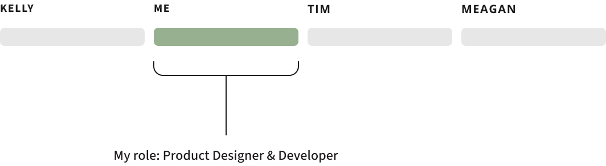
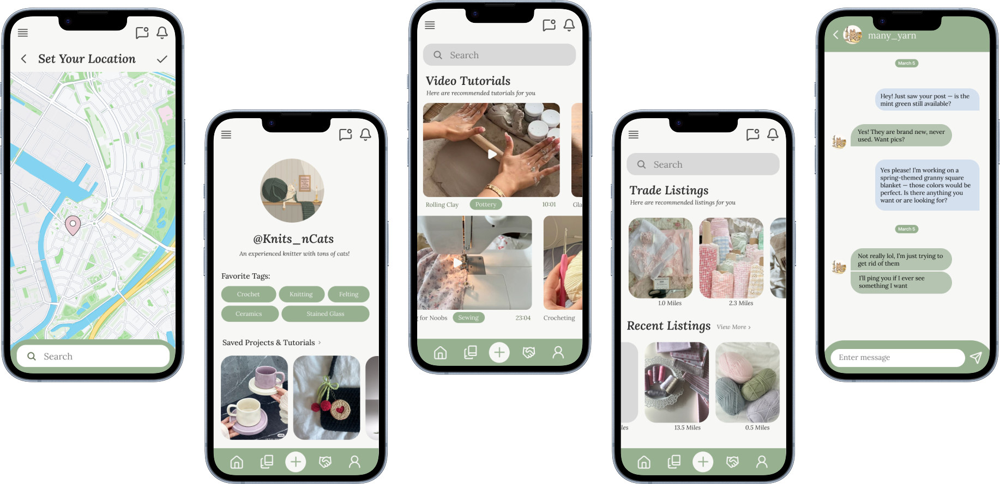

Craft Connect → Hobbyist
UX Design, Web Application to Mobile ApplicationA community-driven platform for discovering crafts, exchanging materials, and connecting with local creatives.

Context & Overview
Craft Connect began as a collaborative team project in a software design course where the goal was to design and build a unique application from scratch. In a group of four, we researched user needs, defined product requirements, and scoped a platform aimed at helping crafters discover new skills, exchange surplus materials, and connect with local creative communities.
After the course ended, I revisited the concept independently and reimagined it as a focused product design case study, refining the scope, simplifying the experience, and translating the idea into a usable, technically feasible application.
The Problem
Many people interested in creative hobbies face a fragmented and frustrating experience:
- Beginners struggle to find clear starting points and trustworthy tutorials
- Experienced crafters often have leftover materials with no easy way to share them
- Craft communities are scattered across forums and social platforms, often with poor moderation and low discoverability
Key User Needs
- New crafters need a low-pressure way to discover projects without feeling overwhelmed
- Users with extra materials want a simple, local-first way to share or exchange supplies
- Community members want safer, more positive interactions than existing forums provide
- All users need clear navigation and accessibility regardless of technical experience
Key User Needs
- New crafters need a low-pressure way to discover projects without feeling overwhelmed
- Users with extra materials want a simple, local-first way to share or exchange supplies
- Community members want safer, more positive interactions than existing forums provide
- All users need clear navigation and accessibility regardless of technical experience
Technical Feasibility & Implementation
We implemented an early version of Craft Connect to validate technical feasibility and explore how the concept translated into a real application. Working with React and JavaScript, we focused on:
- Translating core features into functional components
- Identifying early limitations around complexity, state management, and scalability
- Understanding the agile process and delegating tasks to complete a full application

Redesign & Improvements
Revisiting the project independently, I refined the scope and visual direction:
- Reduced feature clutter to highlight core flows
- Prioritized accessibility and clarity across all screens
- Redesigned visual style to reflect the creative community

Core App Flows
- Discovering and saving craft projects
- Offering or requesting surplus materials nearby
- Finding tutorials, whether video-based or written
Wireframes & Final UI
Low-fidelity wireframes were used to test layout and navigation, which then informed high-fidelity designs in Figma, emphasizing:
- Clear entry points for beginners
- Progressive disclosure of features
- High color contrast, spacing, and readable typography

Final UI
I translated the wireframes into high-fidelity designs in Figma, prioritizing clarity, accessibility, and consistency.
The map lets users browse trade listings nearby, based on a distance they choose themselves. It helps them connect with others in their area while setting clear limits on how far they're willing to travel to pick up materials or supplies.
The listing feature shows users trade posts that match both their selected tags and their chosen mile radius. Once a listing catches their interest, they can start a conversation with the owner directly through the platform to coordinate the exchange.
The home screen displays algorithm-recommended projects, showing the user both the project’s rating and the estimated time needed to complete it.
Users can also save projects to revisit later. The “like” feature was intentionally left out to avoid creating the kind of toxic, competitive environment often found on social media.
The Guide section features a variety of beginner-friendly instruction guides in text format. When a user highlights a hyperlinked keyword or important term, a pop-up page appears with a brief summary of the topic.
This page may also include user-submitted tips or input, along with a helpful video to provide visual support and make the instructions easier to follow.
Reflection & Next Steps
Revisiting Craft Connect allowed me to practice stepping back from a broad concept and making focused product decisions. If I continued the project, I would:
- Conduct usability testing with beginner crafters
- Refine onboarding based on real feedback
- Explore moderation tools to support healthy communities at scale
View the Github here!

Designer, Developer
Academic -> Personal Project